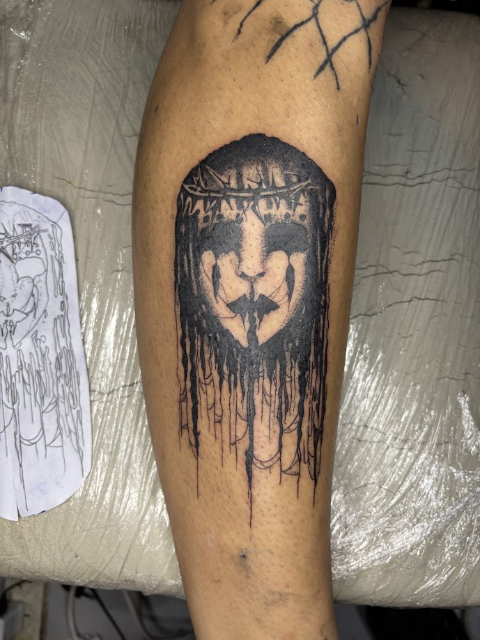

Blackwork
Un tatuaje blackwork es un estilo de tatuaje que utiliza exclusivamente tinta negra para crear diseños intrincados y elaborados. Se caracteriza por el uso de líneas negras sólidas y densas, a menudo con alta densidad de tinta para lograr efectos de sombra y contraste.